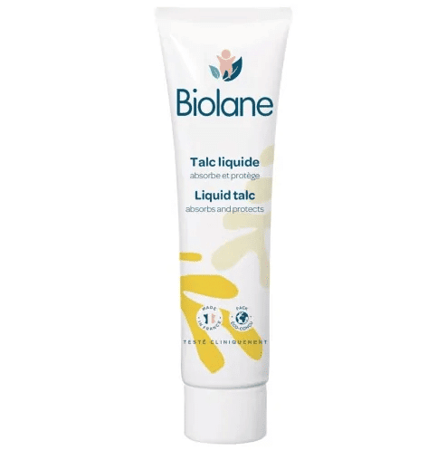

CBIOLANE Talc liquide 100ml

Description du produit
Le BIOLANE Talc Liquide (flacon de 100 ml) est une émulsion innovante qui se transforme en talc au contact de la peau pour protéger l'épiderme de bébé sans les risques de volatilité de la poudre classique.
Caractéristiques
- Type : talc liquide sous forme d'émulsion, qui se transforme en une fine poudre au contact de la peau.
- Cible : nourrissons et bébés, y compris les nouveau-nés selon les indications du fabricant.
- Action : absorbe l'humidité, aide à prévenir les rougeurs et protège la peau contre les frottements.
Informations du produit
Catégorie : Accessoires de soin
Prix : 23.427 DT
Conseils d'utilisation
Les Chico Dry Fit Mini 3-6 kg sont recommandées:
- Éviter le contact avec les yeux et les muqueuses.
- Ne pas appliquer sur une peau présentant des lésions sans avis médical.
- Vérifier la composition en cas d'allergie connue, notamment au parfum ou aux protéines de blé si elles figurent sur l'emballage.
- En cas de rougeurs persistantes ou d'irritation importante, demander conseil à un professionnel de santé.
Quantité
Retourner au catalogue